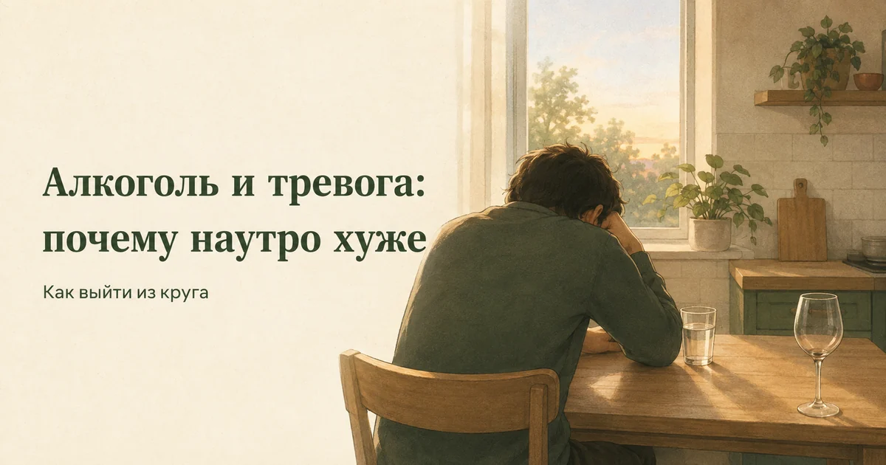
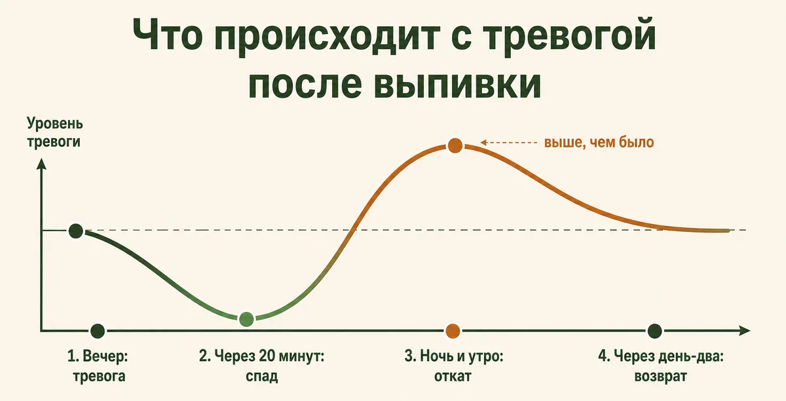
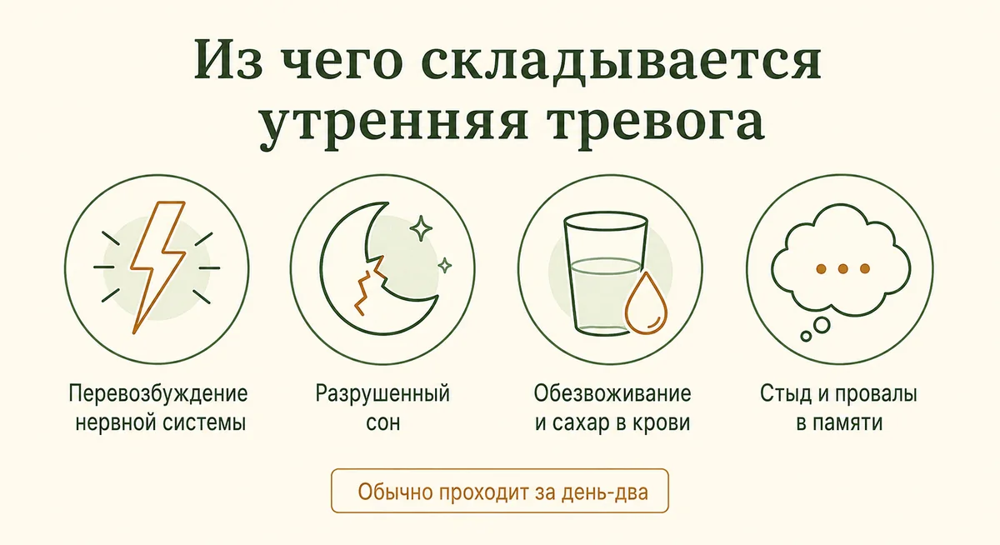
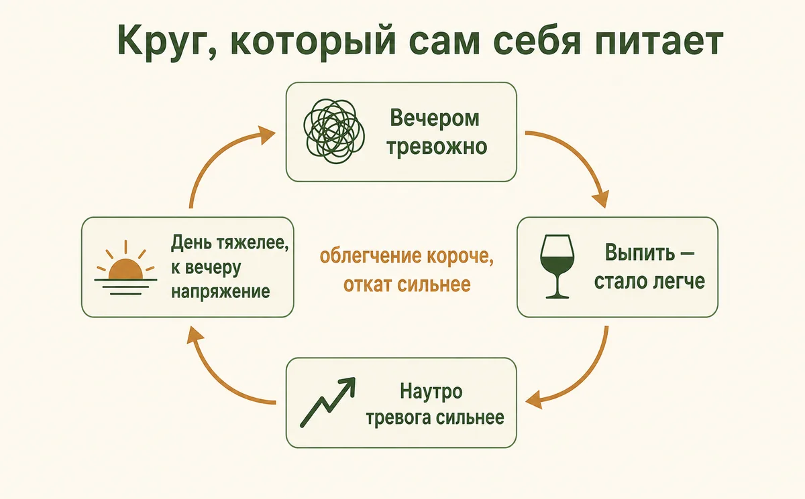
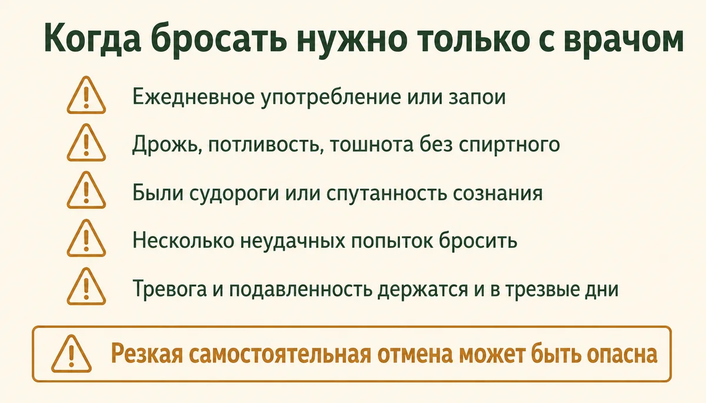
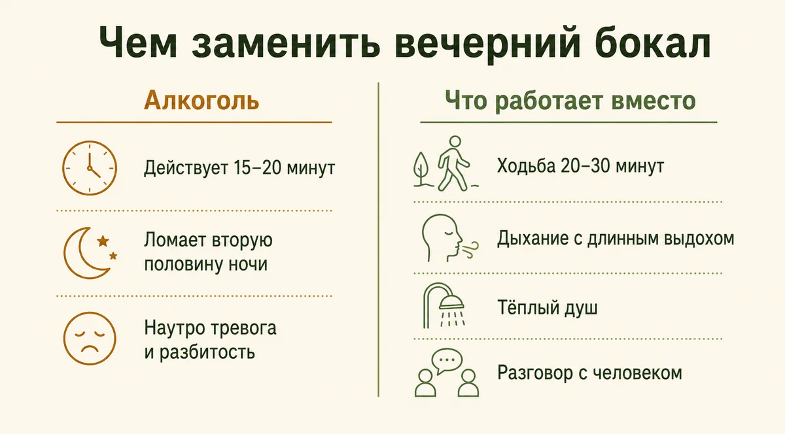

Главная → Блог → Алкоголь и тревога
Алкоголь и тревога: почему наутро хуже и как выйти из круга
Обновлено: 19.08.2026 · 12 минут чтения

Бокал вечером действительно снимает напряжение — на час-полтора. Проблема в том, что за это облегчение приходится платить: когда спиртное выводится, нервная система отвечает перевозбуждением, и тревога возвращается сильнее, чем была. Так появляется утреннее состояние, которое многие знают как «отходняк»: сердце колотится, всё раздражает, накатывает беспричинный страх. Ниже — почему так происходит, как понять, что выпивка стала способом справляться с тревогой, и что делать, чтобы выйти из этого круга.
- Почему алкоголь снимает тревогу — и почему ненадолго
- Похмельная тревога: почему наутро хуже
- Круг: тревога → выпить → ещё больше тревоги
- Отдельно про сон
- Как понять, что алкоголь стал способом справляться
- Важно: почему нельзя резко бросать при ежедневном употреблении
- 7 шагов, чтобы выйти из круга
- Чем заменить: что действительно снижает тревогу
- Что не помогает
- Когда нужен врач
- Частые вопросы
Почему алкоголь снимает тревогу — и почему ненадолго
Спиртное действует на нервную систему как тормоз: оно усиливает процессы торможения и приглушает возбуждение. Отсюда знакомый эффект первых минут — мышцы расслабляются, мысли замедляются, тревожные сценарии перестают казаться срочными. Именно поэтому алкоголь так легко становится «лекарством от вечера»: он работает быстро, предсказуемо и не требует усилий.
Дальше начинается неприятное. Нервная система не терпит смещения равновесия и подстраивается: чтобы компенсировать искусственное торможение, она усиливает возбуждение. Пока спиртное в крови, этого не заметно. Но оно выводится за несколько часов — а компенсация остаётся. Организм оказывается в состоянии перевозбуждения, и субъективно это переживается как тревога.
Отсюда правило, которое стоит запомнить: алкоголь не убирает тревогу, а откладывает её и берёт проценты. Чем регулярнее употребление, тем выше проценты. Влияние спиртного на психику и нервную систему подробно разобрано в справке ВОЗ об алкоголе.

Похмельная тревога: почему наутро хуже
То, что в народе называют «отходняком», а в литературе — похмельной тревогой, складывается из нескольких причин сразу:
- Перевозбуждение нервной системы — то самое, что осталось после того, как спиртное вывелось.
- Разрушенный сон — уснули быстро, но спали плохо, и недосып сам по себе усиливает тревожность.
- Обезвоживание и колебания сахара в крови — дают сердцебиение, слабость и дрожь, которые психика считывает как сигнал опасности.
- Стыд и провалы в памяти — если вечер помнится частично, мозг заполняет пробелы худшими версиями: «что я вчера наговорил».

Последний пункт часто оказывается самым тяжёлым. Человек просыпается не просто с плохим самочувствием, а с ощущением, что чем-то непоправимо испортил отношения. Стоит знать: в этом состоянии оценка событий систематически смещена в сторону худшего, и принимать по горячим следам решения — увольняться, выяснять отношения, писать длинные извинения — не лучшая идея.
У большинства людей это состояние проходит за день-два само. Но если выпивка регулярная, тревога не успевает уйти до следующего раза и превращается в фон.
Круг: тревога → выпить → ещё больше тревоги
Механизм замыкается просто. Вечером тревожно — человек выпивает и получает облегчение. Наутро тревога сильнее исходной, день проходит тяжело, к вечеру напряжение накапливается — и самый очевидный способ его снять уже известен и проверен.

Ловушка в том, что с каждым витком облегчение становится короче, а откат — сильнее. Человек при этом честно считает, что пьёт «из-за тревоги», не замечая, что тревогу в значительной степени производит сам круг. Один из практических способов проверить эту связь — сделать паузу на две-три недели, если это безопасно в вашей ситуации, и посмотреть, что останется.
Часто в этот круг встроено что-то ещё: бессонница, выгорание, подавленность. Алкоголь притупляет всё сразу, поэтому и кажется универсальным решением — и поэтому же его отмена вскрывает сразу несколько проблем, которые он маскировал. Это нормально и ожидаемо, а не признак того, что «без него было лучше».
Отдельно про сон
«Выпиваю, чтобы уснуть» — самая частая причина, по которой люди держатся за вечернюю дозу. Здесь важно развести два разных явления: уснуть и выспаться — не одно и то же.
Спиртное действительно сокращает время засыпания. Но во второй половине ночи оно ломает структуру сна (этот эффект описан, в частности, в материалах Национального института по изучению алкоголя США (NIAAA)): становится больше пробуждений, меньше глубоких фаз и фазы сновидений, к утру подключается то самое перевозбуждение — отсюда классическое пробуждение в четыре утра с колотящимся сердцем. В итоге человек проводит в постели восемь часов и встаёт разбитым.
Если засыпание — главная проблема, работать нужно именно с ним: об этом есть отдельный разбор в статье про бессонницу при тревоге.
Как понять, что алкоголь стал способом справляться
- я замечаю, что жду вечера именно ради возможности выпить и расслабиться;
- без спиртного мне трудно уснуть или «переключиться» после работы;
- наутро после выпивки бывает тревога, стыд или подавленность;
- я стал(а) пить чаще или больше, чем год назад, чтобы получить тот же эффект;
- я пью в одиночестве, чтобы справиться с состоянием, а не за компанию;
- близкие говорили мне, что я стал(а) выпивать больше;
- у меня бывают провалы в памяти о вечере.
Если вы узнали себя в нескольких пунктах, это ещё не диагноз. Но это причина отнестись к теме серьёзно — и, возможно, обсудить её со специалистом, особенно если получается, что тревога и выпивка поддерживают друг друга.
Важно: почему нельзя резко бросать при ежедневном употреблении
Что делать вместо этого: не бросать в одиночку, а обратиться к врачу — наркологу или терапевту. Врач оценит риск и при необходимости подберёт схему, при которой отмена проходит безопасно. Обращение к наркологу не ставит человека «на учёт» автоматически: платная консультация и анонимные форматы существуют, и это стоит уточнить заранее, если опасение именно в этом. О том, какие форматы помощи вообще бывают, полезно почитать в обзоре NHS о поддержке при проблемах с алкоголем.

Если употребление редкое — по выходным, в компании, несколько раз в месяц — и нет признаков физической зависимости, отказ обычно не связан с риском тяжёлого состояния отмены, и его можно сделать самостоятельно. Всё, что описано дальше, относится именно к этой ситуации. Если есть сомнения, к какой из двух групп вы относитесь, или уже появлялись признаки отмены — это вопрос к врачу, а не к самооценке.
Если речь не идёт о физической зависимости и опасной отмене, а вопрос в том, что именно вы заглушаете по вечерам, — это можно разобрать отдельно. Например, проговорить с ИИ-психологом: он не лечит зависимость и не заменяет врача, но помогает назвать вещи своими именами и увидеть, из чего складывается ваш вечер.
Начать разговор бесплатно7 шагов, чтобы выйти из круга
- Сделайте паузу на две-три недели. Не «бросаю навсегда» — такая формулировка пугает и провоцирует срыв, — а ограниченный по времени опыт. Цель не в силе воли, а в данных: вы увидите, сколько тревоги уходит вместе со спиртным, а сколько остаётся.
- Отследите, что именно вы снимаете. Несколько дней записывайте перед привычным временем: что чувствую, что случилось за день, чего хочется на самом деле. Чаще всего за «хочу выпить» стоит вполне называемое: устал, злюсь, тревожно перед завтрашним, не могу остановить мысли.
- Дайте тревоге другой выход. Она никуда не денется от одного лишь запрета — ей нужен другой канал. Быстрее всего работает то, что действует на тело: 20–30 минут ходьбы, душ, растяжка, дыхание с длинным выдохом (вдох на 4, выдох на 6–8).
- Замените ритуал, а не только напиток. Часто держит не спиртное, а обряд: определённое кресло, бокал в руке, момент «день закончился». Ритуал стоит сохранить, поменяв содержимое, — это заметно проще, чем отменить его целиком.
- Уберите автоматизм. Не держать дома, не идти привычным маршрутом мимо магазина, заранее решить, что будете пить на встрече. Решение, принятое заранее и на трезвую голову, надёжнее решения в момент усталости.
- Предупредите одного человека. Не обязательно объявлять всем — достаточно одного, кто в курсе и не будет подливать. Социальное давление на «ну одну-то» снимается гораздо легче, когда рядом есть кто-то знающий.
- Оцените результат через три недели. Как спите, какая тревога по утрам, что изменилось в настроении. Если тревога заметно снизилась, алкоголь, вероятно, был одним из факторов, которые её поддерживали. Если осталась прежней — дело не только в нём, и это уже вопрос к специалисту.
Чем заменить: что действительно снижает тревогу
Пустое место на вечер заполнить нечем — и именно поэтому многие возвращаются. Что работает вместо:
| Алкоголь | Работающая замена | |
|---|---|---|
| Скорость | 15–20 минут | Дыхание — 3–5 минут, движение — 20–30 |
| Что делает со сном | Ускоряет засыпание, ломает вторую половину ночи | Улучшает и засыпание, и глубину |
| Наутро | Тревога, разбитость, иногда стыд | Нейтрально или лучше, чем накануне |
| Что с причиной | Заглушает | Снижает общий уровень напряжения |

Дальше зависит от того, что именно закрывает бокал. Три типичных случая:
Если тревога накрывает прямо сейчас
Нужно то, что действует за минуты: дыхание с длинным выдохом (вдох на 4, выдох на 6–8) — 3–5 минут, короткая прогулка, тёплый душ, разговор с живым человеком. Больше приёмов — в статье о том, как справиться с тревогой.
Если держит привычка «вечер = алкоголь»
Здесь дело не в тревоге, а в ритуале, и ломать его целиком не нужно. Сохраните форму, поменяв содержимое: тот же бокал и то же кресло, но другой напиток — и купите его заранее, чтобы вечером не выбирать. Помогает сменить сценарий: перенести вечер в другую комнату, добавить занятие руками, изменить маршрут с работы.
Если алкоголь нужен, чтобы уснуть
Замена здесь не сработает — нужно разбираться с самой бессонницей, иначе через неделю вернётесь к прежнему. Что делать по шагам — в разборе про бессонницу при тревоге: там про гигиену сна и метод КПТ-бессонницы, который считается основным немедикаментозным подходом.
Из регулярного самое надёжное — движение: 20–30 минут в любом виде несколько раз в неделю. Помогают также практики осознанности — они не убирают тревогу, но учат не втягиваться в неё.
Если за вечерним напряжением стоит не сегодняшний день, а более старая история — постоянная готовность к опасности, стыд, привычка глушить чувства, — стоит посмотреть разбор про детские травмы во взрослой жизни: алкоголь часто оказывается способом выключить именно это.
Что не помогает
- «Лечить» похмельную тревогу новой дозой. Облегчение приходит на час и отодвигает откат на вечер, делая его сильнее. Регулярное опохмеление — само по себе тревожный признак.
- Менять крепкое на слабое. Организм реагирует на количество чистого спирта, а не на этикетку; вино и пиво в тех же объёмах дают тот же откат.
- Держаться на одной силе воли. Пока у тревоги нет другого выхода, запрет работает ровно до первого тяжёлого дня.
- Успокоительные «вместо» — без назначения. Часть таких препаратов сочетается с алкоголем опасно, а часть даёт собственную зависимость. Это решает врач: сочетаемость зависит от конкретного лекарства, и общего ответа не существует (NHS).
- Ждать «подходящего момента». Спокойного периода, в котором бросать будет легко, обычно не наступает.
Когда нужен врач
Обратиться к специалисту стоит, если:
- вы пьёте ежедневно или почти ежедневно, бывают запои — это случай, когда бросать самостоятельно опасно;
- без спиртного появляются дрожь, потливость, сильная тревога, тошнота — признаки состояния отмены;
- были судороги или спутанность сознания при попытке бросить — неотложная ситуация;
- вы несколько раз пытались остановиться и не получалось;
- тревога и подавленность держатся неделями даже в трезвые дни, есть признаки депрессии;
- появляются мысли о том, что не хочется жить.
С тревогой и зависимостью работают разные специалисты, и это нормально: нарколог помогает пройти отмену безопасно, психотерапевт — разобраться с тем, что человек заглушал. Часто нужны оба, и обращение к одному не отменяет другого.
Частые вопросы
Почему после алкоголя тревога сильнее, чем была?
Алкоголь временно притупляет тревогу, а нервная система отвечает на это перевозбуждением, которое разворачивается, когда спиртное выводится. Наложите на это нарушенный сон, обезвоживание и колебания сахара в крови — и получите знакомое утреннее состояние: сердце колотится, всё раздражает, накатывает беспричинный страх и стыд за вчерашнее. Это не характер и не слабость, а закономерная реакция организма, которая обычно проходит за день-два.
Сколько держится тревога после выпивки?
После обычной дозы неприятное состояние держится от нескольких часов до полутора суток и уходит само. Если пить регулярно, тревога перестаёт быть утренним эпизодом и становится фоном, который держится неделями и заметно снижается только через несколько недель трезвости. Именно поэтому кажется, что «тревога появилась сама по себе», хотя её поддерживает регулярное употребление.
Опасно ли резко бросать пить?
Если человек пьёт ежедневно или почти ежедневно и особенно если бывают запои, резкая самостоятельная отмена может быть опасной: возможны судороги и тяжёлое состояние с помрачением сознания, требующее неотложной помощи. В такой ситуации бросать нужно не в одиночку, а под наблюдением врача, который при необходимости подберёт медикаментозную поддержку. При редком употреблении без признаков физической зависимости отказ обычно не связан с таким риском и за пару недель даёт улучшение сна и снижение тревоги. Если вы не уверены, к какой группе относитесь, безопаснее спросить врача.
Помогает ли алкоголь уснуть?
Уснуть — да, выспаться — нет. Спиртное сокращает время засыпания, но во второй половине ночи разрушает структуру сна: становится больше пробуждений, меньше глубоких фаз и фазы сновидений. Человек просыпается разбитым и тревожным, а недосып сам по себе усиливает тревогу на следующий день — так замыкается ещё один круг.
Почему после алкоголя бывают панические атаки?
На фоне перевозбуждения нервной системы после выпивки тело даёт яркие симптомы: сердцебиение, нехватку воздуха, дрожь. Психика считывает их как признак опасности, пугается — и запускается паническая атака. У людей, склонных к паническим атакам, спиртное поэтому нередко провоцирует приступ на следующее утро. Само по себе это не опасно для жизни, но если приступы повторяются, это повод отнестись к употреблению серьёзнее и обратиться к специалисту.
Как отличить похмельную тревогу от тревожного расстройства?
Похмельная тревога привязана к выпивке: появляется через несколько часов после неё и проходит за день-два. Тревожное расстройство существует само по себе — оно есть и в дни без алкоголя, держится неделями и мешает работать, спать и общаться. Разобраться помогает простой опыт: две-три недели без спиртного. Если тревога уходит вместе с ним, дело было в нём; если остаётся — стоит обратиться к специалисту.
Можно ли пить, если принимаешь антидепрессанты или успокоительные?
Этот вопрос решает только лечащий врач, потому что ответ зависит от конкретного препарата. Сочетание алкоголя с рядом лекарств, особенно с успокоительными и снотворными, может быть опасным, а с антидепрессантами обычно мешает лечению и усиливает побочные эффекты. Правильный шаг — прямо спросить у врача, который назначил препарат, а не искать общий ответ в интернете.
Читать также
- Тест AUDIT (ВОЗ) — 10 вопросов о том, находится ли употребление в зоне риска.
- Как справиться с тревогой: 8 техник, которые реально помогают — чем заменить вечерний бокал.
- Бессонница при тревоге: почему не спится и что делать — если держитесь за спиртное ради засыпания.
- Эмоциональное выгорание: 5 стадий, признаки и как восстановиться — если вечер стал единственным способом отключиться.
- Детские травмы: 7 следов во взрослой жизни — если заглушать чувства привычно с давних пор.
Материал подготовлен командой AI Therapist и основан на рекомендациях ВОЗ и NHS, а также на доказательных подходах к работе с тревогой (КПТ, практики осознанности). Статья носит просветительский характер, не ставит диагноз, не заменяет консультацию врача и не является руководством по самостоятельному отказу от алкоголя при зависимости.
Источники: ВОЗ — алкоголь, NHS — Alcohol use disorder, NHS — Alcohol support, NIAAA — Alcohol facts and statistics.
Источники проверены 19.08.2026.
Кто отвечает за содержание сайта и по каким правилам мы готовим материалы — на странице о проекте.